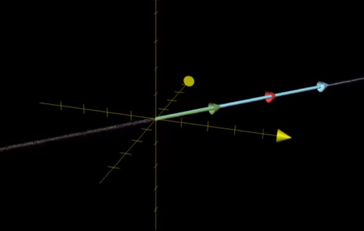
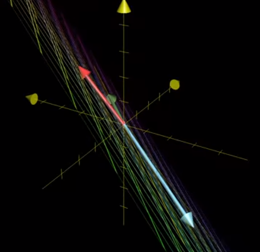

Null Space and Kernels
Main Idea
3blue1brown discusses Null Spaces in the context of inverse matricies.
If you map from one space to another using a matrix A then you can undo that mapping using its inverse, A^-1. That is, of course, provided that the matrix is invertible. This means– among a ton of other things via the Invertible Matrix Theorem– that the mappings between the two spaces is one-to-one.
Under this condition, we have a matrix A with a non-zero determinant, whose only solution that lands on the point [0 0]^T is the original point (0, 0).
However when we consider transformations that squish our feature space into a lower dimension, this means that we’ve got some group of points that all land on the point (0, 0).
2D Case
In the 2D case, our original span is the entirety of the XY plane, but when we map from 2d to 1D (a line) some line in our original space (represented below)
from IPython.display import Image
Image('images/null_line_before.PNG')
Will be all sink to the origin (the yellow dot)
Image('images/null_line_after.PNG')
In 3D
Extending this idea to 3D space, if our matrix A has determinant equal to zero, we might collapse our original space
Image('images/null_solid_before.PNG')
to a 2D plane
Image('images/null_solid_after_2d.PNG')
Or even further to a simple line
Image('images/null_solid_after_line.PNG')
And so like our first example, there will be some set of data points (here, the pink line, in the space spanned by the red, blue, and green lines)
Image('images/null_solid_line_before.PNG')
That get shrunk to the origin when we collapse our 3D space to 2D
Image('images/null_solid_line_after.PNG')
Similarly, if a transformation squishes a 3D shape into a line
Image('images/null_solid_plane_before.PNG')
then there’s a whole plane that goes to the origin
Image('images/null_solid_after_line.PNG')
Definition
And so we call the Null Space of a matrix A the collection of all points (defined by vectors, planes, etc) that collapse to the origin when we undergo the transformation.